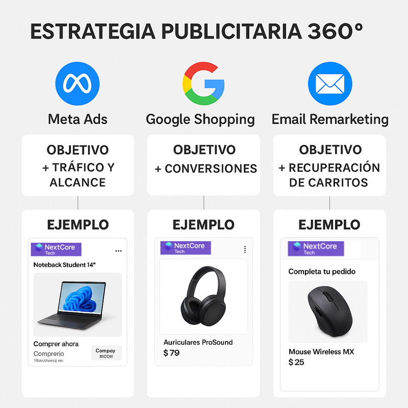

Parte 3 · Embudos de Conversión
El embudo de conversión (funnel) de NextCore Tech fue diseñado para guiar a los usuarios desde el primer contacto con la marca hasta la compra final, utilizando estrategias diferenciadas según su nivel de interés.
La estructura se basa en tres fases: frío, tibio y caliente, que representan distintos grados de conocimiento y compromiso del cliente con la marca.
Estructura del embudo
| Fase | Público objetivo | Acciones implementadas | Métricas principales |
|---|---|---|---|
| Frío | Personas que nunca vieron la marca | Reels, anuncios amplios, sorteos y contenido educativo | Alcance, CPM (costo por mil impresiones) |
| Tibio | Usuarios que visitaron la web o interactuaron con publicaciones | Campañas de remarketing con productos visitados | CTR (Click Through Rate), CPC (Costo por Clic) |
| Caliente | Clientes que agregaron productos al carrito | Email automatizado + anuncio con sentido de urgencia | Conversiones, tasa de compra |
Estrategia aplicada
El embudo fue implementado mediante Shopify y Meta Ads, con integración de Mailchimp para la automatización del seguimiento. Cada fase del recorrido se conecta de forma orgánica, manteniendo mensajes coherentes y llamados a la acción claros.
Fase fría: se busca atraer al público mediante contenido visual atractivo (reels, sorteos, tips) que despierte curiosidad.
Etapa tibia: el objetivo es nutrir al usuario mostrando comparativas, beneficios y promociones personalizadas.
Fase caliente: se aplican estrategias de cierre como recordatorios por email y anuncios con urgencia o stock limitado.

Resultado esperado
Este embudo permite optimizar el presupuesto, enfocando los recursos en las personas más propensas a convertir. Además, garantiza que el usuario reciba la información correcta en el momento adecuado, generando una experiencia personalizada y aumentando las probabilidades de compra.
Conclusión: El modelo de embudo frío → tibio → caliente demuestra la capacidad de diseñar campañas data-driven, donde la segmentación, el retargeting y la automatización trabajan de forma conjunta para maximizar los resultados.
Fase TIBIO - Interacción Previa
Público Objetivo
Visitaron la web o interactuaron con contenido
Acciones
- Remarketing con productos específicos
- Testimonios y casos de éxito
- Comparativas de productos
- Email con contenido de valor
Métricas Clave
| Métrica | Valor |
|---|---|
| CTR (Click Through Rate) | 1.8% - 2.5% |
| CPC (Costo por clic) | $12 - $18 |
| Objetivo | Consideración / Engagement |
Fase CALIENTE - Listo para Comprar
Público Objetivo
Agregaron al carrito o vieron productos múltiples veces
Acciones
- Email de carrito abandonado (1-24hrs)
- Anuncio con urgencia y descuento
- Envío gratis en compras inmediatas
- Chat proactivo con asesoría
- Contador regresivo de oferta
Métricas Clave
| Métrica | Valor |
|---|---|
| Conversiones | 25 ventas/mes (estimado) |
| Tasa de conversión | 1.2% - 1.5% |
| Recuperación de carritos | 10-12% |
| Objetivo | Conversión / Venta |
Resumen del Embudo
| Fase | Público | Estrategia | KPI Principal |
|---|---|---|---|
| Frío | Nunca vieron la marca | Contenido de valor + alcance | CPM / Alcance |
| Tibio | Visitaron o interactuaron | Remarketing + educación | CTR / CPC |
| Caliente | Agregaron al carrito | Urgencia + incentivos | Conversiones |